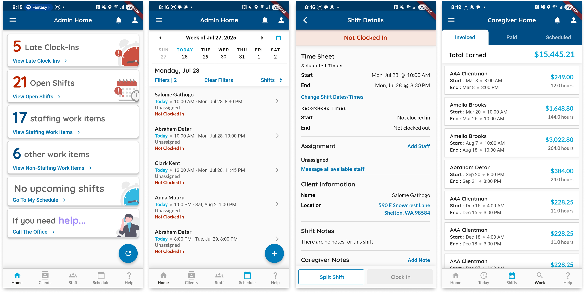
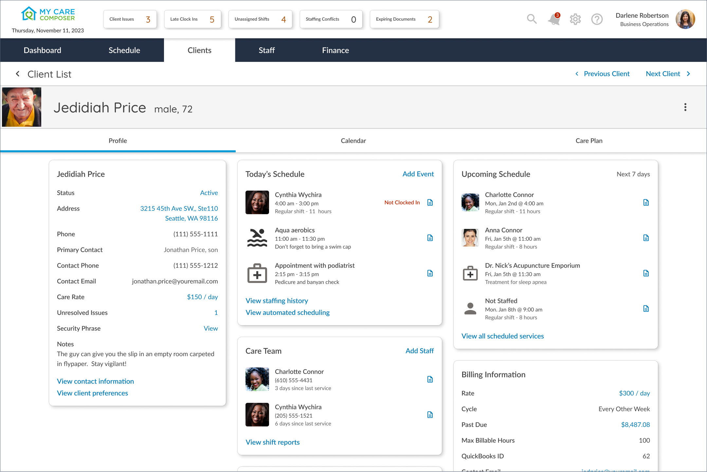
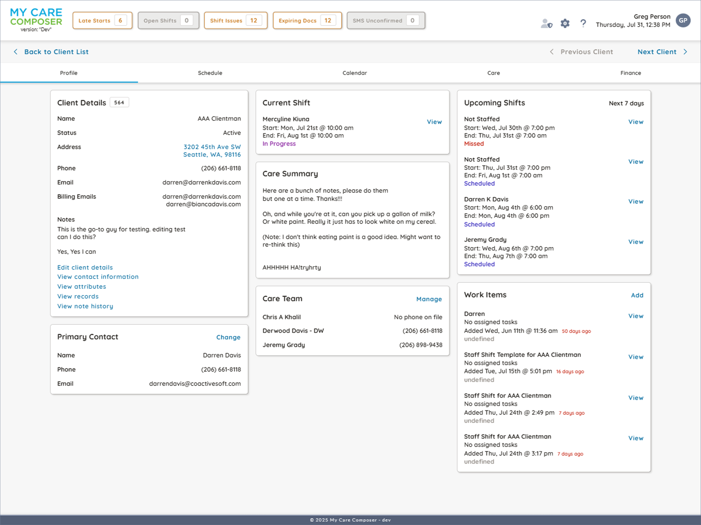
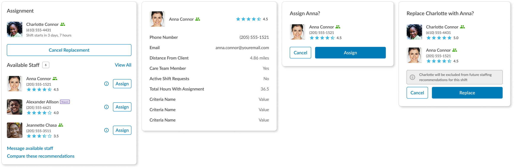
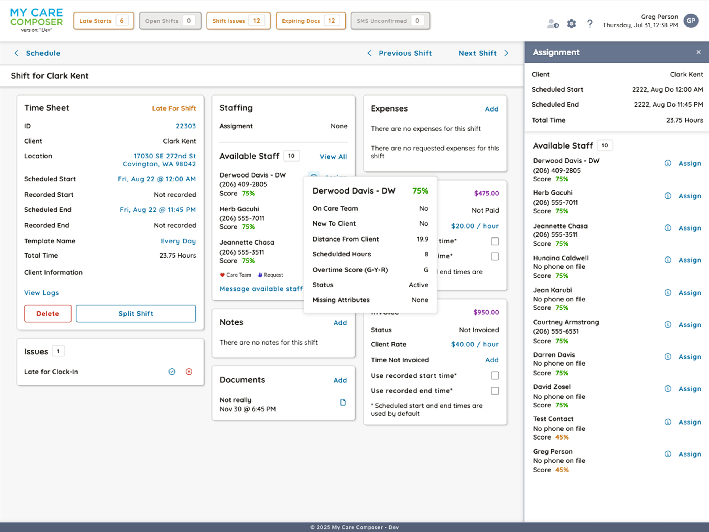

Healthcare
Home healthcare agencies manage caregivers who provide medical and non-medical support to patients in their homes. These agencies must handle scheduling, payroll, compliance, and client records. I led the design and development of a cloud-based platform to streamline these operations.
Begun 2021 (in active development)
Design Lead / Lead UI Engineer
Myself, a developer, a database admin, and a product manager
A home healthcare agency's reputation relies heavily on caregiver reliability. This project started when the agency needed better ways to track and verify time spent with clients. The solution began as a straightforward digital timecard system for improved accountability.
When I was brought on to this project, the scope and feature set had scaled beyond the original 'timecard app'. Over the course of a year, most of the business's needs had been asked of this simple piece of software revealing the need for a solution that could manage the operations of a home healthcare business.
I was asked to lead a redesign that would account for the new requirements and optimize workflows and feature sets based on each unique role within the organization. The new product would be cloud-based, allowing for real-time updates and access between an Angular-based operational platform and a Flutter-based caregiver mobile app.

The original mobile app was redesigned to allow caregivers to see their schedule, clock in and out of shifts, request available shifts, see client information and assigned tasks, and monitor their invoice and payment status.
Business Operations
In addition to providing caregivers a means to manage their schedules and tasks, an operational platform was needed to streamline communication and coordination between caregivers, clients, and administrative staff.
I designed a platform to manage client needs, caregiver performance, scheduling, task tracking, financials and communication across all roles.
My approach to product design is to transition between thinking through information architecture and process flows in a prototyping tool and working in a production environment to code final layouts, interactions, and component APIs. For this project the tools of choice were Figma for prototyping and Angular and Flutter for production.

Client Profile (Figma)

Client Profile (Angular)
Addressing Efficiency
Home healthcare agencies must coordinate multiple complex operations and respond rapidly to unexpected changes. One frequent challenge involves finding immediate coverage when caregivers are unavailable due to illness or absence.
To address this, I designed a flexible scheduling system that allows for quick reassignment of caregivers to open shifts. This system scores all staff on caregiver availability, skill sets, and client needs to ensure the best possible match. The platform also includes real-time notifications to alert caregivers of new assignments and changes to their schedules.

Workflow Shift Replacement (Figma)
The automated scheduling system eliminated manual coordination of shift changes, improving efficiency and client satisfaction. This streamlined process maintains high-quality care while reducing administrative work and ensuring reliable caregiver coverage.
